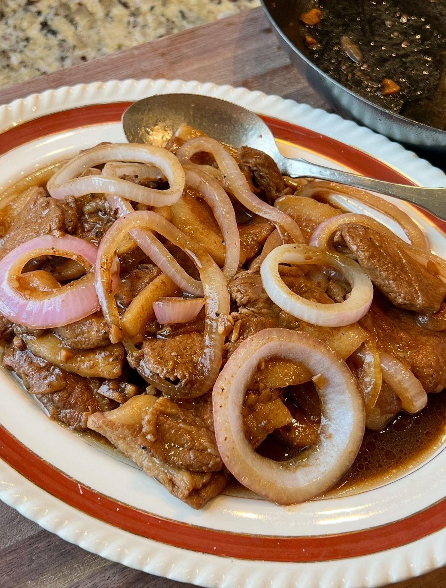

Home
Pork Steak

Description
Pork Steak in Filipino cooking is pork braised in soy sauce and
calamansi with onions on top. We call it bistek-style because it follows
the same method as Bistek Tagalog; the same salty-sour taste, same onion
rings on top, same way it makes you want another cup of rice, just with
pork instead of beef. Some people call it Pork Bistek or Pork Chop Steak.
Same dish, different names.
Ingredients
- 1kg liempo or porkchop
- 1 cup soy sauce
- oyster sauce
- liquid seasoning
- calamansi
- sugar
- black pepper
- 2 pcs white onion
- garlic
- cooking oil
Steps
- Cut meat.
- Mix soy sauce, oyster sauce, calamansi juice, liquid seasoning, and black pepper with pork. Marinade for a few hours.
- Cut onion rings and fry with small amount of cooking oil. Set aside.
- Remove pork from marinade and set the marinade aside. With small amount of cooking oil, sear until lightly browned, then set aside.
- Mince the remaining onion and garlic.
- Same pan, saute2 garlic and onion until slightly soft. Pour in the marinade and scrape the browned bits at the bottom.
- Add the pork back to the pan, add water, then cover and let it simmer on low heat until the meat starts to become tender.
- Add sugar and more pepper.
- Check if tender and adjust taste.
- Cook for about 45mins or until tender.
- Finish with fresh onion rings.